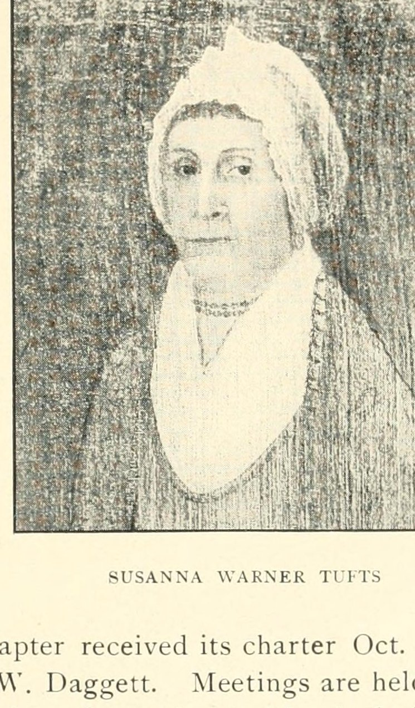

Biography

Susanna Warner came from Gloucester, on Cape Ann. She was baptized there in March 1746 as the daughter of Deacon Philemon Warner:
“Susannah, d. Dea. Philemon, bp. Mar. 23, 1745-6. c. r. 1.”
Vital Records of Gloucester, Massachusetts, to the End of the Year 1849, vol. I, Births (Topsfield, 1917), p. 746. Book scan (Internet Archive)
The Massachusetts DAR history of 1905 gives her birth as March 20, 1745, which in the Old Style calendar then in use falls three days before that baptism (March 1745/6, i.e., 1746 in modern reckoning). It names her parents as “Major Philemon Warner and Mary Prince” and says she was one of their eleven children (History of the Massachusetts Daughters of the American Revolution (Boston, 1905), “Susannah Tufts Chapter, of Weymouth,” p. 193. Page (Internet Archive)).
Marriage to Dr. Cotton Tufts
In the autumn of 1789, four years after the death of his first wife, Lucy Quincy, Dr. Cotton Tufts of Weymouth married her at Gloucester. The marriage was recorded in both towns:
“Susanna, and [Hon. int.] Cotton Tufts, Esq. [of Weymouth. int.], Oct. 22, 1789.”
Vital Records of Gloucester, vol. II, Marriages (Topsfield, 1923). Book scan (Internet Archive) (Scanned text; obvious scanning errors corrected.)
“WARNER, Susanna ([War]ner), Mrs. [int. omits Mrs.], of Gloucester, and [Hon.] Cotton Tufts Esq., Oct. 22, 1789.”
Vital Records of Weymouth, Massachusetts, to the Year 1850, vol. II (Boston, 1910), marriages under Warner. Book scan (Internet Archive) (Scanned text; obvious scanning errors corrected.)
That November, Abigail Adams wrote from New York to congratulate Dr. Tufts on his second marriage (Abigail Adams to Cotton Tufts, November 22, 1789, New-York Historical Society). Susanna Tufts became mistress of the doctor’s Weymouth household, which also took in his orphaned niece Lucy Jones and, for a time, her own niece Susanna Warner.
In her own words
One letter of hers survives in the Adams Papers. Writing to Abigail Adams in May 1798, after the death of the niece who had lived with her, she described the girl’s last illness and added a portrait of her husband:
“the Doctor thanks you for your love and gratitude to him and wishes his regards presented to you and your best friend he has been very much out of health this Spring but is Recruting he is a friend indeed— Such friends grow not on evry tree. he may with propriety be Call’d father and brother he has prov’d himself So to numbers.”
Adams Family Correspondence, vol. 13, Susanna Warner Tufts to Abigail Adams, Weymouth, May 22, 1798, pp. 47–49. Text (Massachusetts Historical Society) · Founders Online
The editors note that Abigail Adams had written on May 8 “a letter of condolence on the death of Tufts’ niece Susanna Warner,” and that Lucy Jones (1768–1847), the doctor’s niece, “resided with her aunt and uncle until her 1801 marriage” (Adams Family Correspondence, vol. 13, Susanna Warner Tufts to Abigail Adams, Weymouth, May 22, 1798, pp. 47–49. Text (Massachusetts Historical Society) · Founders Online, notes 1 and 3).
Dr. Tufts died at Weymouth on December 8, 1815, aged 84 (Vital Records of Weymouth, vol. II, deaths). Susanna outlived him.
The Susannah Tufts Chapter, DAR
“Susannah Tufts Chapter, of Weymouth, was organized in January, 1899, with thirteen members. Miss Susan C. Richards was the first Regent, and served two years. In naming this chapter, the members decided to honor one of the citizens of Weymouth, conspicuous during the American Revolution for his ardor, activity, and zeal, and a liberal contributor in money, so bestowed upon it the name of Dr. Cotton Tufts’ wife, Susannah Tufts.”
History of the Massachusetts Daughters of the American Revolution (Boston, 1905), “Susannah Tufts Chapter, of Weymouth,” p. 193. Page (Internet Archive)
The chapter received its charter on October 25, 1900, from State Regent Miss Sara W. Daggett. By 1905 it had thirty-two members, met on the last Monday of each month from September to May, and had given to the McKinley and Wolcott memorials, the Spanish War nurses’ fund and Memorial Continental Hall. Its special work was a “Susannah Tufts bed in the Maternity Hospital, of San Juan, Porto Rico,” for which it sent bedding each year (History of the Massachusetts Daughters of the American Revolution (Boston, 1905), “Susannah Tufts Chapter, of Weymouth,” p. 193. Page (Internet Archive)).
Service Record
Town: Gloucester and Weymouth, Mass. · Dates: 1746–1832
Civilian. She is honored by the DAR through her husband’s Revolutionary service rather than service of her own (Mass. DAR history, 1905, p. 193).
Family Connection
Father: Deacon (the DAR history says Major) Philemon Warner of Gloucester (Gloucester VR, vol. I, p. 746). Mother: Mary Prince (Mass. DAR history, 1905, p. 193). Husband: Dr. Cotton Tufts (1732–1815), whose first wife Lucy Quincy died October 30, 1785 (Weymouth VR, vol. II, deaths). No children of this marriage have been found. Her niece Susanna Warner lived with her and died in 1798 (Adams Family Correspondence, vol. 13, p. 47, n. 1).
Relatives with profiles on this site: husband Dr. Cotton Tufts; father-in-law Dr. Simon Tufts (1700–1747); brother-in-law Dr. Simon Tufts (1727–1786).
Spouse(s)
- Dr. Cotton Tufts (b. Medford, May 30, 1732; d. Weymouth, Dec. 8, 1815), as his second wife. Married at Gloucester, October 22, 1789 (Gloucester VR, vol. II; Weymouth VR, vol. II).
Authoritative IDs / Index Numbers
| Source | ID / status |
|---|---|
| Perseus person index (auth=) | Note: Pending further work. |
| Find a Grave memorial | Note: Pending further work. |
| Brooks, History of Medford (1855) register no. | Note: Pending further work. |
| Mass. Soldiers and Sailors | Not yet checked for this page |
| DAR ancestor no. | Note: Pending further work. |
| FamilySearch ID | Note: Pending further work. |
| Geni profile | Note: Pending further work. |
| WikiTree ID | Note: Pending further work. |
| Town / vital records | Medford VRs not yet checked by volume and page |
Only IDs confirmed against dates and family are given as matches. “Not yet checked” means the source has not been searched; “Checked, not found” means it was searched without a match.
⚑ Unverified
Birth date: March 20, 1745 (Mass. DAR history, p. 193) is consistent with the baptism of March 23, 1745/6 (Gloucester VR, vol. I, p. 746), reading 1745 as Old Style; Note: Pending further work on a birth record. Mother Mary Prince and the eleven children: from the DAR history only; the Gloucester records seen list Philemon Warner jr.’s children by a wife Mary in 1733–1740, but no Warner–Prince marriage was found. “Major” Philemon Warner (DAR history) against “Dea. Philemon” (Gloucester VR). “Mrs.” Susanna Warner in the Weymouth marriage record may be a courtesy title or may mean an earlier marriage; Note: Pending further work. Death and burial: secondary sources give June 4, 1832, at Boston; no record has yet been seen. Note: Pending further work. Her death is not in the Weymouth vital records.
Links and Resources
Every source, record, map, survey, marker and artifact tied to this person, gathered in one place. Page numbers are given where a book is cited.
Maps, Surveys and Artifacts
- — Susanna Warner Tufts. Portrait reproduced in the 1905 history of the Massachusetts DAR, p. 193, captioned “SUSANNA WARNER TUFTS.” The original portrait’s artist, date and present location are not give

Digitized Books and Journals
- Source: Internet Archive — …“SUSANNA WARNER TUFTS.” The original portrait’s artist, date and present location are not given.Image: Halftone in History of the Massachusetts Daughters of the American Revolution (1905). Public domain (published 1905).
- Vital Records of Gloucester, Massachusetts, to the End of the Year 1849, vol. I, Births (Topsfield, 1917), p. 746. · Book scan (Internet Archive)
- Vital Records of Gloucester, vol. II, Marriages (Topsfield, 1923). · Book scan (Internet Archive)
- Vital Records of Weymouth, Massachusetts, to the Year 1850, vol. II (Boston, 1910), marriages under Warner. · Book scan (Internet Archive)
Archives, Letters and Records
- Text (Massachusetts Historical Society) — Adams Family Correspondence, vol. 13, Susanna Warner Tufts to Abigail Adams, Weymouth, May 22, 1798, pp. 47–49.
- Founders Online — Adams Family Correspondence, vol. 13, Susanna Warner Tufts to Abigail Adams, Weymouth, May 22, 1798, pp. 47–49. Text (Massachusetts Historical Society)